高维协方差矩阵估计方法
1 概述
协方差矩阵估计是统计学和金融学中的核心课题之一，主要用于刻画多维随机变量之间的线性依赖关系。这一方法在风险管理、投资组合优化以及资产定价等领域具有广泛的应用价值。设\(p\)维随机向量\(\mathbf X=(X_1,\cdots,X_p)^T\)，其协方差矩阵\(\Sigma\)是一个\(p\times p\)的对称矩阵，其第\((i,j)\)元素定义为： \[ \Sigma_{ij} = \text{Cov}(X_i, X_j) \] 其中\(\text{Cov}(X_i, X_j)\)表示\(X_i\)和\(X_j\)之间的协方差，而对角线元素\(\Sigma_{ii}\)则代表变量\(X_i\)的方差。
在Markowitz投资组合优化模型（又称均值-方差优化模型）中，协方差矩阵扮演着关键角色，用于量化资产之间的风险和相关关系。该模型通过在给定收益水平下最小化投资组合风险来构建有效前沿。假设\(\mathbf X\)表示\(p\)个风险资产的收益率，其预期收益和协方差矩阵分别为\(\boldsymbol \mu\)和\(\Sigma\)。记投资组合权重为\(\mathbf w\)，则该优化问题可表述为： \[ \min_w w^T \Sigma w \quad \text{s.t.} \quad w^T \mu \ge \mu_p, \quad w^T \mathbf{1} = 1 \] 其中\(\mu_p\)为目标投资组合收益率，\(\mathbf{1}\)为全1向量。协方差矩阵的准确性直接影响资产间的风险分散效果，从而决定最优权重\(w\)的选择。通常，预期收益率向量\(\boldsymbol \mu\)和协方差矩阵\(\Sigma\)需要基于历史收益率数据进行估计。
假设我们观测到独立同分布样本\(\mathbf X_1, \mathbf X_2,\cdots,\mathbf X_n\)，则样本协方差矩阵 \[ S = \frac{1}{n}\sum_{t=1}^n (\mathbf X_t-\bar{\mathbf X}) (\mathbf X_t-\bar{\mathbf X})^T \tag{1}\] 是协方差矩阵\(\Sigma\)的一个估计量，其中\(\bar{\mathbf X}=n^{-1}\sum_{t=1}^n \mathbf X_t\)为样本均值向量。在低维情形下（即\(n \gg p\)），样本协方差矩阵具有良好的性质：它可逆、一致，且具有渐近正态性，即\(\sqrt{n}(\text{vec}(S) - \text{vec}(\Sigma))\)依分布收敛于正态分布。此外，样本协方差矩阵\(S\)的特征值会收敛于总体协方差矩阵\(\Sigma\)的特征值。具体而言，若\(\lambda^*_1 \geq \lambda^*_2 \geq \dots \geq \lambda^*_p\)为\(\Sigma\)的特征值，\(\lambda_1 \geq \lambda_2 \geq \dots \geq \lambda_p\)为\(S\)的特征值，则有： \[ \lambda_i \overset{P}{\to} \lambda^*_i \quad \text{当} \quad n \to \infty. \] 然而，在高维情形下（即维度\(p\)与样本量\(n\)相当或更大，\(p \gg n\)），样本协方差矩阵的估计会面临一系列挑战，导致其失效。当\(p > n\)时，样本协方差矩阵\(S\)将变为奇异矩阵，且其估计偏差和方差显著增大。此外，样本协方差矩阵\(S\)的特征值与总体协方差矩阵\(\Sigma\)的特征值之间会出现显著偏差，样本特征值分布也会偏离真实分布。通常，总体协方差矩阵\(\Sigma\)的最大特征值会被高估，而最小特征值则会被低估。
# 高维情形下样本协方差矩阵失效的R代码示例
# 加载必要的库
library(MASS)
library(Matrix)
# 设置随机种子以确保结果可重复
set.seed(123)
# 参数设置
p <- 100 # 维度
n <- 50 # 样本量
# 生成真实协方差矩阵（假设为对角矩阵）
Sigma_true <- diag(p)
# 生成多元正态分布数据
X <- mvrnorm(n, mu = rep(0, p), Sigma = Sigma_true)
# 计算样本协方差矩阵
Sigma_sample <- cov(X)
# 检查样本协方差矩阵的奇异性
if (rankMatrix(Sigma_sample) < p) {
cat("样本协方差矩阵是奇异的（不可逆）。\n")
} else {
cat("样本协方差矩阵是非奇异的（可逆）。\n")
}样本协方差矩阵是奇异的（不可逆）。# 比较真实协方差矩阵和样本协方差矩阵的特征值
eigen_true <- eigen(Sigma_true)$values
eigen_sample <- eigen(Sigma_sample)$values
# 绘制特征值对比图
plot(eigen_true, type = "b", col = "blue", ylim = range(c(eigen_true, eigen_sample)),
xlab = "特征值索引", ylab = "特征值", main = "真实与样本协方差矩阵的特征值对比")
lines(eigen_sample, type = "b", col = "red")
legend("topright", legend = c("真实特征值", "样本特征值"), col = c("blue", "red"), lty = 1)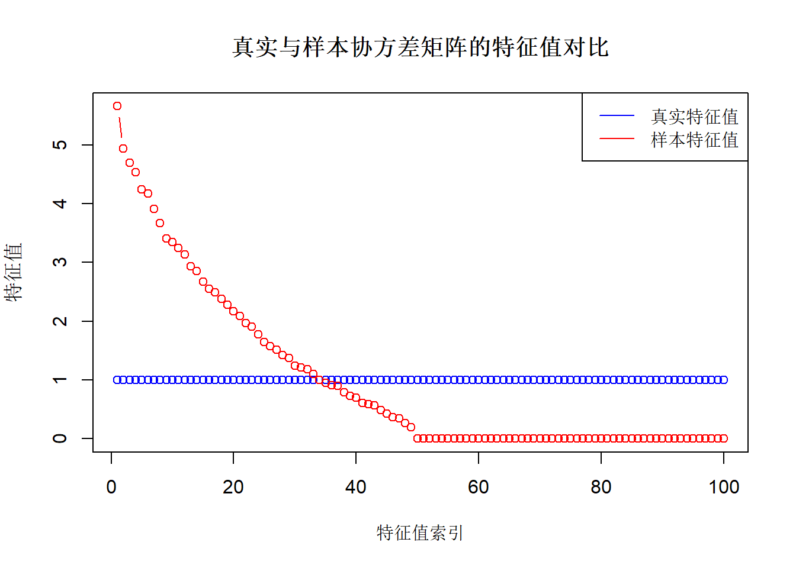
# 计算条件数
condition_number_true <- max(eigen_true) / min(eigen_true)
condition_number_sample <- abs(max(eigen_sample) / min(eigen_sample))
cat("真实协方差矩阵的条件数:", condition_number_true, "\n")真实协方差矩阵的条件数: 1 cat("样本协方差矩阵的条件数:", condition_number_sample, "\n")样本协方差矩阵的条件数: 3.810329e+15 # 检查样本协方差矩阵的条件数是否显著增大
if (condition_number_sample > 10 * condition_number_true) {
cat("样本协方差矩阵的条件数显著增大，表明估计不稳定。\n")
} else {
cat("样本协方差矩阵的条件数相对稳定。\n")
}样本协方差矩阵的条件数显著增大，表明估计不稳定。# 输出真实和样本协方差矩阵的前5行和前5列
cat("真实协方差矩阵（前5x5）：\n")真实协方差矩阵（前5x5）：print(Sigma_true[1:5, 1:5]) [,1] [,2] [,3] [,4] [,5]
[1,] 1 0 0 0 0
[2,] 0 1 0 0 0
[3,] 0 0 1 0 0
[4,] 0 0 0 1 0
[5,] 0 0 0 0 1cat("样本协方差矩阵（前5x5）：\n")样本协方差矩阵（前5x5）：print(Sigma_sample[1:5, 1:5]) [,1] [,2] [,3] [,4] [,5]
[1,] 1.525719367 0.007196938 -0.116373354 0.060185045 0.288532327
[2,] 0.007196938 0.969917411 -0.009698882 -0.001109417 0.174393596
[3,] -0.116373354 -0.009698882 1.179549189 -0.149925659 0.039293879
[4,] 0.060185045 -0.001109417 -0.149925659 0.613148899 0.001869769
[5,] 0.288532327 0.174393596 0.039293879 0.001869769 0.9249938582 高维协方差矩阵的稀疏结构假设与相关估计方法
估计高维协方差矩阵的第一种思路是假定协方差矩阵具有一定的稀疏结构，即假定协方差矩阵\(\Sigma\)中绝大多数元素为0，进而通过合适的方法对样本协方差矩阵\(S\)进行修正，得到最终的稀疏估计。现有稀疏结构假设大致可分为两类：带化（bandable）矩阵和稀疏矩阵，带化矩阵是一种特殊的稀疏矩阵。
2.1 带化矩阵假设下的估计方法
当\(\mathbf X\)中的变量存在自然的顺序，比如时间序列变量或者空间变量，那么可以很自然的假设协方差矩阵呈现局部依赖结构，即矩阵中的非对角元素绝对值随着该元素距离对角线距离的增加而减小，直至为0。这一类协方差矩阵成为带化矩阵，其特征是非0元素集中在对角线附近的带状区域里，区域外的元素全部为0。
2.1.1 Banding方法
Banding方法（Bickel and Levina 2008b）是一种用于估计带化高维协方差矩阵的方法，该方法保留样本协方差矩阵主对角线及其附近的元素，将远离主对角线的元素置为零，从而在高维数据环境下获得更稳健的带化稀疏估计。具体来说，带化后的协方差矩阵\(\hat{\Sigma}^{\text{band}}\)定义为： \[ \hat{\Sigma}_{ij}^{\text{band}} = S_{ij} \cdot I\left( |i - j| \leq k \right) \tag{2}\] 其中，\(I(\cdot)\)是示性函数，\(k\)是带宽参数，控制保留的元素范围，一般需要根据经验或者依赖交叉验证进行选择。在局部依赖假设下，Banding方法能够一致地估计真实协方差矩阵，在适当的带宽选择下，Banding方法的估计误差以较快的速度收敛到零。
2.1.2 Tapering方法
Tapering（渐缩，Cai, Zhang and Zhou 2010）方法是另一种用于带化高维协方差矩阵估计的方法。该方法在保留主对角线及其附近的元素的同时对元素进行平滑衰减，从而获得更稳健的估计。Tapering估计量的表达式为 \[ \hat{\Sigma}_{ij}^{\text{taper}} = \frac{2S_{ij}}{k}\left\{(k-|i-j|)_+-(k/2-|i-j|)_+ \right\} \tag{3}\] 其中\((x)_+=\max(x,0)\)，\(k\)同样为带宽参数。 式 3 可以等价地表述为 \[ \hat{\Sigma}_{ij}^{\text{taper}} = \begin{cases} S_{ij} \quad &\text{if} \quad |i-j|\le k/2 \\ 2(1-|i-j|/k)S_{ij} \quad &\text{if} \quad k/2 < |i-j| \le k \\ 0 \quad &\text{if} \quad |i-j|>k. \end{cases} \] 与 式 2 做对比，tapering方法对\(k/2 < |i-j| \le k\)区域内的元素做了平滑衰减处理，其权重由1逐步降低至0，而banding方法对该区域的元素的权重依然保持为1，继而在\(k\)处骤降至0。在一定的假设条件下，tapering方法比banding方法具有更快的收敛速率。
if (!requireNamespace("cvCovEst", quietly = TRUE)) {
install.packages("cvCovEst")
}
library(cvCovEst)
library(MASS)
library(Matrix)
# 设置随机种子以确保结果可重复
set.seed(123)
# 参数设置
p <- 100 # 维度
n <- 50 # 样本量
band_width <- 0.05 # 带化处理的阈值
# 生成空间距离矩阵（假设为1D空间上的点）
locations <- seq(0, 1, length.out = p) # 在[0, 1]区间上均匀分布的点
dist_matrix <- as.matrix(dist(locations, method = "euclidean"))
# 生成协方差矩阵（协方差随距离减小，超过阈值后为0）
Sigma_true <- exp(-dist_matrix / 0.02) # 协方差随距离指数衰减
Sigma_true[dist_matrix > band_width] <- 0 # 带化处理
diag(Sigma_true) <- 1 # 对角线元素为1
# 生成多元正态分布数据
X <- mvrnorm(n, mu = rep(0, p), Sigma = Sigma_true)
# 使用cvCovEst包进行协方差矩阵估计，并使用交叉验证选择带宽
cv_banding <- cvCovEst(
dat = X,
estimators = c(bandingEst),
estimator_params = list(bandingEst = list(k = seq(1L, 10L, 1L))),
cv_scheme = "v_fold",
v_folds = 5
)
cv_tapering <- cvCovEst(
dat = X,
estimators = c(taperingEst),
estimator_params = list(
taperingEst = list(k = seq(2L, 20L, 2L))
),
cv_scheme = "v_fold",
v_folds = 5
)
# 输出估计的协方差矩阵
Sigma_banding <- cv_banding$estimate
Sigma_tapering <- cv_tapering$estimate
# 输出估计所选择的带宽
cat("banding方法的带宽：", cv_banding$estimator)banding方法的带宽： bandingEst, k = 3cat("tapering方法的带宽：", cv_tapering$estimator)tapering方法的带宽： taperingEst, k = 4cat("banding估计的协方差矩阵（前5x5）：\n")banding估计的协方差矩阵（前5x5）：print(Sigma_banding[1:5, 1:5]) [,1] [,2] [,3] [,4] [,5]
[1,] 0.93750898 0.6236684 0.3547426 -0.01915142 0.0000000
[2,] 0.62366837 1.0784256 0.5959016 0.26162694 0.1375792
[3,] 0.35474256 0.5959016 0.7676698 0.39133696 0.3005238
[4,] -0.01915142 0.2616269 0.3913370 0.75291543 0.4742981
[5,] 0.00000000 0.1375792 0.3005238 0.47429814 1.0099289cat("tapering估计的协方差矩阵（前5x5）：\n")tapering估计的协方差矩阵（前5x5）：print(Sigma_tapering[1:5, 1:5]) [,1] [,2] [,3] [,4] [,5]
[1,] 0.93750898 0.62366837 0.3547426 -0.00957571 0.00000000
[2,] 0.62366837 1.07842562 0.5959016 0.26162694 0.06878958
[3,] 0.35474256 0.59590156 0.7676698 0.39133696 0.30052384
[4,] -0.00957571 0.26162694 0.3913370 0.75291543 0.47429814
[5,] 0.00000000 0.06878958 0.3005238 0.47429814 1.00992891# 比较估计矩阵和真实矩阵的Frobenius范数误差
error <- c(norm(Sigma_banding - Sigma_true, type = "F"),
norm(Sigma_tapering - Sigma_true, type = "F"))
cat("banding和tapering方法估计矩阵与真实矩阵的Frobenius范数误差分别为：", error, "\n")banding和tapering方法估计矩阵与真实矩阵的Frobenius范数误差分别为： 4.488601 4.499928 # 可视化真实协方差矩阵和估计协方差矩阵
library(ggplot2)
library(reshape2)
# 真实协方差矩阵可视化
Sigma_true_melted <- melt(Sigma_true)
ggplot(Sigma_true_melted, aes(x = Var1, y = Var2, fill = value)) +
geom_tile() +
scale_fill_gradient2(low = "blue", mid = "white", high = "red", midpoint = 0) +
labs(title = "True Covariance Matrix", x = "Variable", y = "Variable") +
theme_minimal()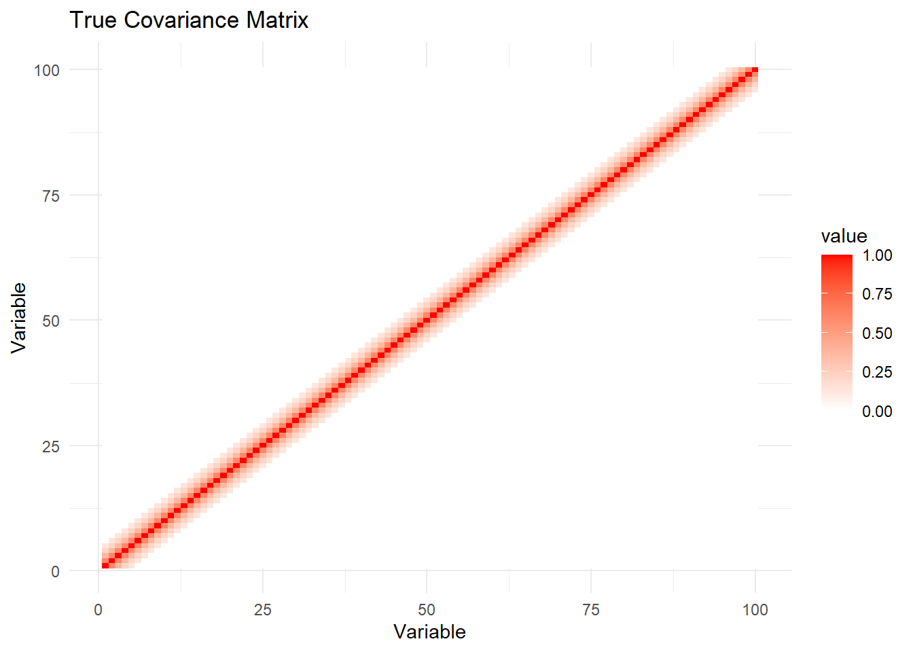
# banding估计协方差矩阵可视化
Sigma_banding_melted <- melt(Sigma_banding)
ggplot(Sigma_banding_melted, aes(x = Var1, y = Var2, fill = value)) +
geom_tile() +
scale_fill_gradient2(low = "blue", mid = "white", high = "red", midpoint = 0) +
labs(title = "Banding Estimated Covariance Matrix", x = "Variable", y = "Variable") +
theme_minimal()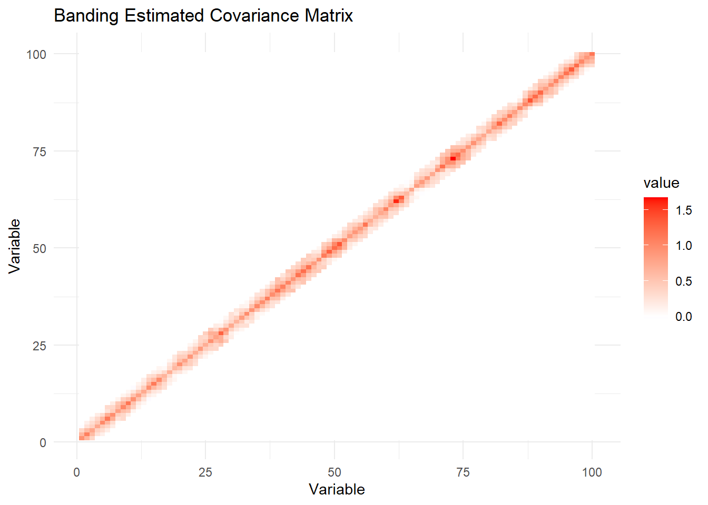
# tapering估计协方差矩阵可视化
Sigma_tapering_melted <- melt(Sigma_tapering)
ggplot(Sigma_tapering_melted, aes(x = Var1, y = Var2, fill = value)) +
geom_tile() +
scale_fill_gradient2(low = "blue", mid = "white", high = "red", midpoint = 0) +
labs(title = "Tapering Estimated Covariance Matrix", x = "Variable", y = "Variable") +
theme_minimal()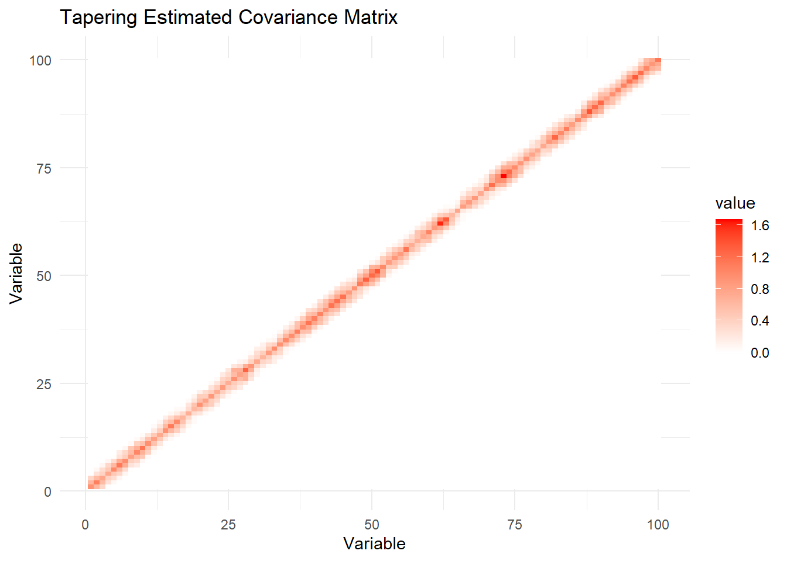
2.2 稀疏性假设下的阈值估计方法及其拓展
2.2.1 Hard Thresholding（硬阈值法）
硬阈值法（Bickel and Levena 2008a）是一种基于稀疏性假设的高维协方差矩阵估计方法，该方法对样本协方差矩阵\(S\)的非对角线元素\(S_{ij}\)进行硬阈值处理，保留绝对值大于阈值\(\omega\)的元素，将小于等于\(\omega\)的元素置为零： \[ \hat{\Sigma}_{ij}^{\text{hard-thresh}} = \begin{cases} S_{ij} \quad &\text{if}\quad i=j \\ S_{ij}\cdot I\left( |S_{ij}| > \omega \right) \quad &\text{if}\quad i\ne j \end{cases} \tag{4}\] 其中\(\omega>0\)为预先给定的阈值水平。当随机向量\(\mathbf X\)为Gaussian或者sub-Gaussian时，理论上阈值可以设定为\(\omega = C\sqrt{\frac{\log p}{n}}\)，其中\(C>0\)，但是该方式仍然包含未知的常数\(C\)，实际中阈值选择通常基于交叉验证确定。硬阈值法方法易于理解和实现，计算效率高，能够有效利用高维数据的稀疏性，减少噪声。在一定的假设条件下，硬阈值法具有一致性。
2.2.2 Soft Thresholding（软阈值法）
软阈值法在硬阈值的基础上融入了压缩估计，它的核心思想是通过将小于阈值的元素向零截断，同时减少大于阈值的元素的绝对值，从而实现数据的平滑稀疏化。其表达式为 \[ \hat{\Sigma}_{ij}^{\text{soft-thresh}} = \begin{cases} S_{ij} \quad &\text{if}\quad i=j \\ \mathrm{sign}(S_{ij})(|S_{ij}|- \omega)_+ \quad &\text{if}\quad i\ne j \end{cases} \tag{5}\] 其中\(\omega>0\)为阈值参数。具体而言，当样本协方差矩阵非对角线元素\(|S_{ij}|<\omega\)时将其设置为0，当\(S_{ij}>\omega\)时将其向0进行线性压缩\(S_{ij}-\omega\)，当\(S_{ij}<-\omega\)时将其向0调整为\(S_{ij}+\omega\)。
2.2.3 Generalized Thresholding（广义阈值法）
广义阈值法是硬阈值法和软阈值法的进一步拓展，该方法使用一般化的压缩函数\(h(\cdot;\omega)\)作用于样本协方差矩阵的非对角线元素： \[ \hat{\Sigma}_{ij}^{\text{thresh}} = \begin{cases} S_{ij} \quad &\text{if}\quad i=j \\ h(S_{ij};\omega) \quad &\text{if}\quad i\ne j \end{cases} \tag{6}\] 其中\(\omega\)为阈值参数。压缩函数\(h(\cdot;\omega)\)须满足3个条件： (1). \(h(z;\omega)=0\)当\(|z|\le \omega\)； (2). \(|h(z;\omega)|\le |z|\)； (3). \(|h(z;\omega)-z|\le \omega\)。 第1个条件是阈值效应，即将绝对值小于\(\omega\)的值截断为0，第2个条件是压缩效应，第3个条件规定了压缩的程度。
硬阈值法和软阈值法作为广义阈值法的特例，它们对应的压缩函数分别为 \[ h^{\text{hard-thresh}}(z;\omega)=z\cdot I(|z|>\omega), \] 以及 \[ h^{\text{soft-thresh}}(z;\omega)=\mathrm{sign}(z)(|z|-\omega)_+. \] 另外两种常用的压缩函数分别是SCAD（Smoothly Clipped Absolute Deviation）： \[ h^{\text{SCAD}}(z;\omega)=\begin{cases} \mathrm{sign}(z)(|z|-\omega)_+ \quad &|z|\le 2\omega \\ \{(a-1)z-\mathrm{sign}(z)a\omega\}/(a-2) \quad & 2\omega <|z|\le a\omega\\ z \quad &|z|>a\omega \end{cases} \] 其中\(a>2\)为形状参数，一般取值3.7，以及MCP（minimax concave penalty）： \[ h^{\text{MCP}}(z;\omega) = \begin{cases} (a/(a-1))\mathrm{sign}(z)(|z|-\omega)_+ \quad & |z|\le a\omega\\ z \quad & |z|>a\omega \end{cases} \] 其中形状参数\(a>1\)一般取值为3。
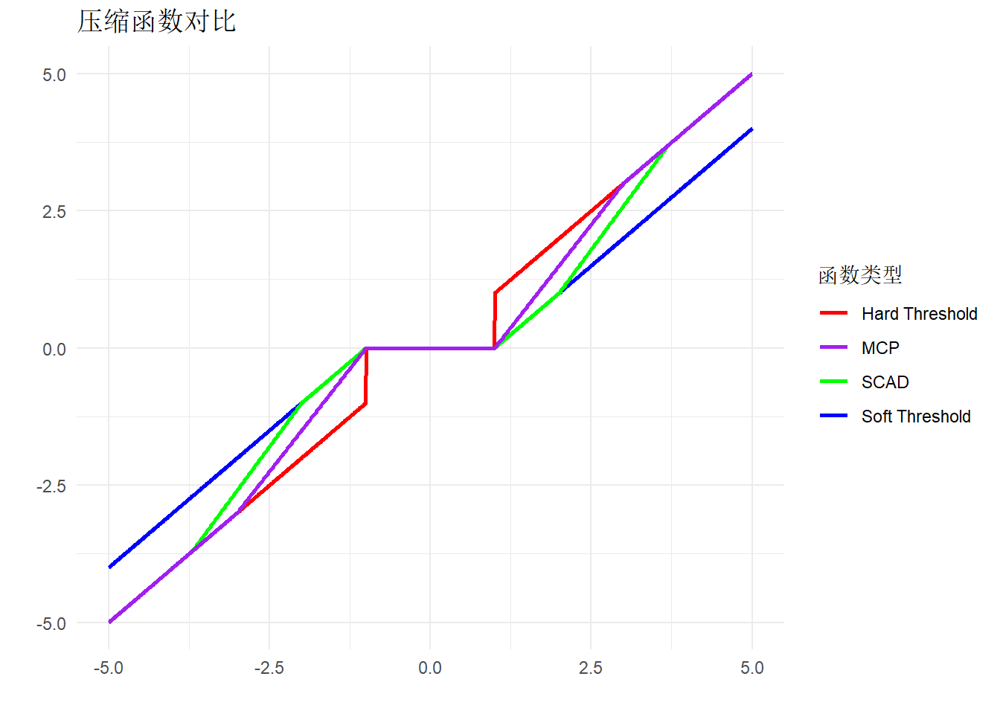
上图绘制了硬阈值、软阈值、SCAD和MCP四种压缩函数在阈值\(\omega=1\)时的图像。首先，硬阈值压缩函数是不连续的，在阈值处直接将\(|z|\)截断为0；第二，由于在阈值之外的区域引入了线性压缩，软阈值压缩函数连续，但是同时在\(|z|\)较大的区域引入了偏差，而绝对值较大区域往往是不需要进行额外压缩估计的；第三，SCAD和MCP在保留了软阈值的连续性的同时，避免了在绝对值较大区域进行压缩估计从而出现偏差。
2.2.4 广义阈值法的等价惩罚回归表示
广义阈值法 式 6 可以等价地表示为以下惩罚最小二乘回归的解： \[ \hat{\Sigma}^{\text{thresh}} = \arg\min_{\Sigma} \left\{ \frac{1}{2} \|S - \Sigma\|_F^2 + \sum_{i \neq j} p(|\Sigma_{ij}|;\omega) \right\} \tag{7}\] 其中，\(S\)为样本协方差矩阵，\(p(\cdot;\omega)\)为惩罚函数，需要指出的是，我们只对非对角线元素施加惩罚，\(\|\cdot\|_F\)表示Frobenius范数，一个\(p\times p\)维矩阵\(A\)的Frobenius范数表示为\(\|A\|_F=\sqrt{\sum_{i=1}^p\sum_{j=1}^p A_{ij}^2}\)。
Antoniadis and Fan (2001) 仔细讨论了广义阈值法中的压缩函数与惩罚最小二乘回归中的惩罚函数一一对应关系，总的来说，压缩函数是惩罚函数的的次梯度。 表 1 分别列出了硬阈值、软阈值、SCAD以及MCP四种方法对应的压缩函数和惩罚函数。需要指出的是，软阈值方法对应的正好是Lasso惩罚函数。
| 方法 | 压缩函数 | 惩罚函数 |
|---|---|---|
| 硬阈值 | \(h(z;\omega) = z \cdot I(|z| > \omega)\) | \(p(z;\omega) = \omega^2 - \frac{(|z| - \omega)^2}{2} \cdot I(|z| < \omega)\) |
| 软阈值 | \(h(z;\omega) = \text{sign}(z) \cdot (|z| - \omega)_+\) | \(p(z;\omega) = \omega |z|\) |
| SCAD | \(h(z;\omega) = \begin{cases} \text{sign}(z) \cdot (|z| - \omega)_+ & \text{if } |z| \leq 2\omega, \\\ \frac{(a-1)z - \text{sign}(z) \cdot a \omega}{a-2} & \text{if } 2\omega < |z| \leq a\omega, \\ z & \text{if } |z| > a\omega \end{cases}\) | \(p(z;\omega) = \begin{cases} \omega |z| & \text{if } |z| \leq \omega, \\ \frac{2a\omega |z| - z^2 - \omega^2}{2(a-1)} & \text{if } \omega < |z| \leq a\omega, \\ \frac{(a+1)\omega^2}{2} & \text{if } |z| > a\omega \end{cases}\) |
| MCP | \(h(z;\omega) = \begin{cases} \text{sign}(z) \cdot (|z| - \omega)_+ & \text{if } |z| \leq a\omega, \\ \frac{a}{a-1} \cdot z & \text{if } |z| > a\omega \end{cases}\) | \(p(z;\omega) = \begin{cases} \omega |z| - \frac{z^2}{2a} & \text{if } |z| \leq a\omega, \\ \frac{a \omega^2}{2} & \text{if } |z| > a\omega \end{cases}\) |
惩罚最小二乘回归不仅提供了广义阈值法的另外一种解释，还为高维协方差矩阵的稀疏估计提供了更为丰富的处理方式。一般来说，经阈值处理后的协方差矩阵估计量在大样本下是满足正定性的，但是在有限样本下正定性可能不成立。为了始终保证估计量正定、可逆，Liu et al (2014)在 式 7 中融入了正定性限制条件： \[ \hat{\Sigma}^{\text{EC2}} = \arg\min_{\lambda_{min}(\Sigma)\ge \tau} \left\{ \frac{1}{2} \|S - \Sigma\|_F^2 + \sum_{i \neq j} p(|\Sigma_{ij}|;\omega) \right\}, \] 其中约束条件\(\lambda_{min}(\Sigma)\ge \tau\)，即矩阵估计量的最小特征值存在下界\(\tau>0\)，保证了所得到的协方差矩阵估计既满足稀疏性又符合正定要求。这一估计量称为EC2（estimation of covariance with eigenvalue constraints）估计量。
2.2.5 阈值法的自适应改进
上述阈值方法的一个不足之处在于其没有将\(\mathbf X\)边际分布可能存在的方差异质性纳入考虑，导致阈值处理在不同变量间存在尺度差异，或者说对于不同变量间的样本协方差施加的惩罚力度存在差异。基于这一不足，Cai and Liu (2011)在硬阈值法的基础上提出了Adaptive Thresholding（自适应阈值法）: \[ \hat{\Sigma}_{ij}^{\text{ada-thresh}} = \begin{cases} S_{ij} \quad &\text{if}\quad i=j \\ S_{ij}\cdot I\left( |S_{ij}|/SE(S_{ij}) > \omega \right) \quad &\text{if}\quad i\ne j \end{cases} \] 其中\(SE(S_{ij})\)是协方差估计量\(S_{ij}\)的标准误。这一估计量能够自适应数据的不同尾部分布特征，还能够容许数据中可能存在厚尾分布。
Adaptive Lasso（自适应Lasso）是一种基于软阈值方法的自适应改进，由Rothman, Levina and Zhu (2009)提出。软阈值法对应 式 7 中的LASSO惩罚，Adaptive Lasso在Lasso惩罚函数的基础上引入自适应权重\(\tau_{ij}\)，对不同的协方差矩阵元素进行不同程度的惩罚： \[ \hat{\Sigma}^{\text{ada-lasso}} = \arg\min_{\Sigma} \left\{ \frac{1}{2} \|S - \Sigma\|_F^2 + \sum_{i \neq j} \omega \tau_{ij} |\Sigma_{ij}| \right\} \] 其中权重通常基于初始估计（如样本协方差矩阵）计算，比如 \[ \tau_{ij} = \frac{1}{|S_{ij}|^\gamma} \] 其中，\(\gamma > 0\)是控制权重衰减速度的参数。
# 安装并加载必要的包
library(cvCovEst)
library(Matrix)
# 设置随机种子
set.seed(123)
# 生成一般性的稀疏高维协方差矩阵
n <- 50 # 样本量
p <- 100 # 变量维度
# 随机生成二维地理坐标
set.seed(123)
coords <- matrix(runif(p * 2, 0, 10), nrow = p, ncol = 2) # 生成 p 个点的坐标
# 计算距离矩阵
dist_matrix <- as.matrix(dist(coords))
# 基于距离生成稀疏协方差矩阵
threshold <- 2 # 距离阈值
true_cov <- exp(-dist_matrix) # 使用指数核函数生成协方差
true_cov[dist_matrix > threshold] <- 0 # 距离超过阈值的设为 0
diag(true_cov) <- 1 # 对角线设为 1
# 生成多元正态分布数据
X <- MASS::mvrnorm(n, mu = rep(0, p), Sigma = true_cov)
# 使用 cvCovEst 包进行协方差矩阵估计
# 将硬阈值、SCAD 和自适应 Lasso 作为列表传入
result <- cvCovEst(
dat = X,
estimators = c(
thresholdingEst,
scadEst,
adaptiveLassoEst
),
estimator_params = list(
thresholdingEst = list(gamma = seq(0.3, 0.6, length.out = 20)),
scadEst = list(lambda = seq(0.1, 0.4, length.out = 20)),
adaptiveLassoEst = list(lambda = seq(0.1, 0.4, length.out = 20), n = 0.9)
),
cv_scheme = "v_fold",
cv_loss = cvMatrixFrobeniusLoss
)
# 比较三种方法
cv_sum <- summary(result, dat_orig = X)
# 三种方法对应的最优超参数
cv_sum$bestInClass# A tibble: 3 × 6
estimator hyperparameter cv_risk cond_num sign sparsity
<chr> <chr> <dbl> <dbl> <chr> <dbl>
1 scadEst lambda = 0.210526315789474 2511. -144 IND 0.82
2 adaptiveLassoEst lambda = 0.273684210526316, … 2512. -183 IND 0.9
3 thresholdingEst gamma = 0.457894736842105 2520. -13.4 IND 0.97# 三种方法的热度图
plot(result, dat_orig = X, estimator = c('thresholdingEst', 'scadEst', 'adaptiveLassoEst'),
plot_type = "heatmap", stat = c('min'), abs_v = F)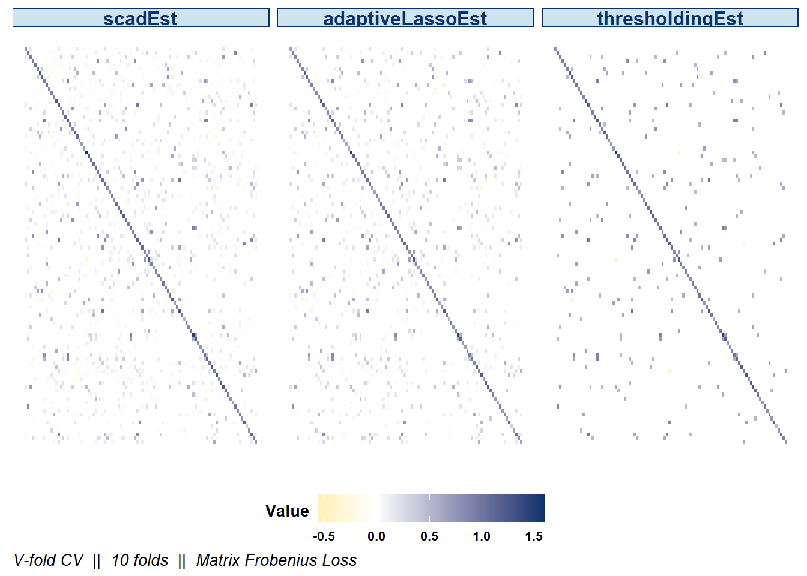
# 提取最佳估计结果
best_estimate <- result$estimate
best_method <- result$estimator
# 最佳结果对应的各种图像
plot(result, dat_orig = X, estimator = c('thresholdingEst', 'scadEst', 'adaptiveLassoEst'),
plot_type = "summary", stat = c('min'), abs_v = F)Summary plot defaults to the optimal selected estimator.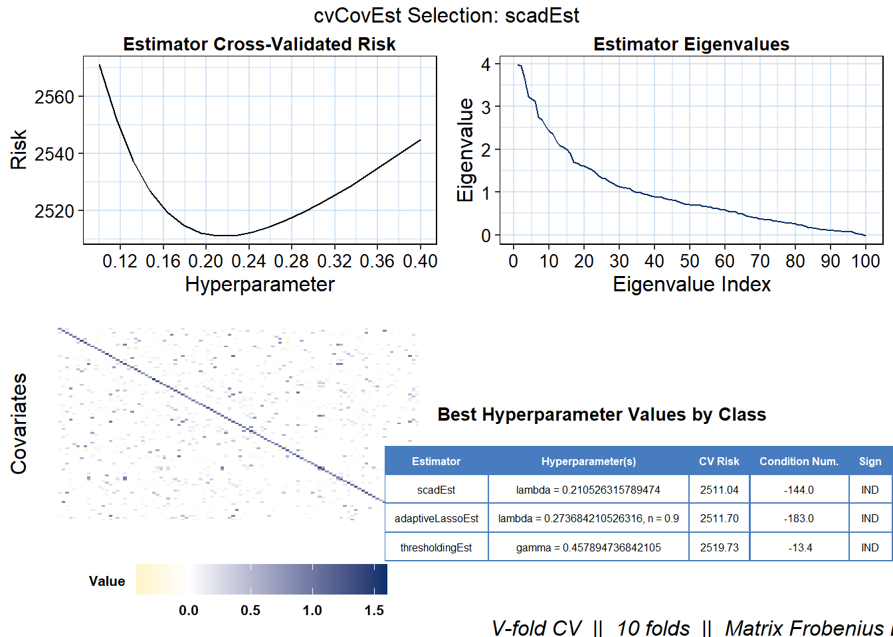
# 数值比较
cat("Best Method:", best_method, "\n")Best Method: scadEst, lambda = 0.210526315789474 cat("Frobenius Norm Error:", norm(true_cov - best_estimate, "F"), "\n")Frobenius Norm Error: 7.322798 # 图形比较
par(mfrow = c(1, 2))
image(Matrix(true_cov), main = "True Covariance Matrix")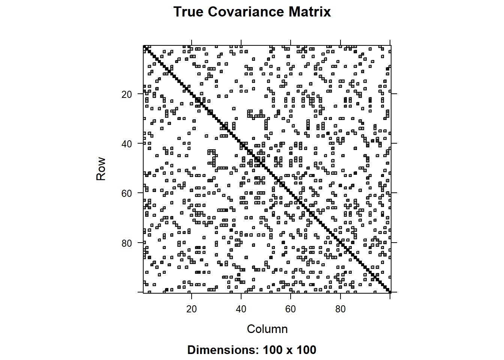
image(Matrix(best_estimate), main = paste("Best Estimate (", best_method, ")", sep = ""))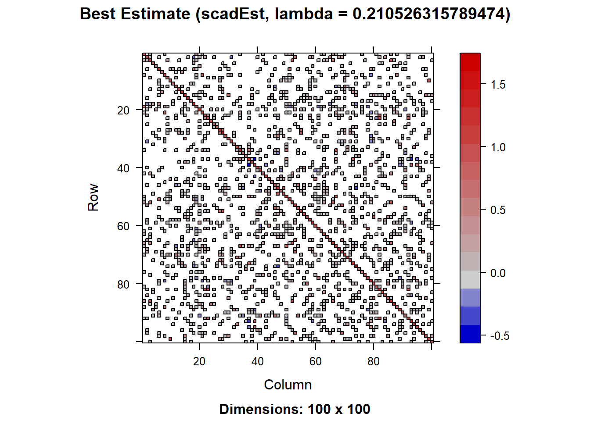
3 无稀疏结构下的压缩估计
前述的高维协方差矩阵估计方法均建立在总体协方差矩阵具有稀疏结构的假设之上，尽管该假设条件在一些应用中是合理的，但是并不总是适用的。比如，对股票市场中的收益率变量来说，由于所有股票收到同样的市场风险影响，股票收益率两两之间总是相关的，此时稀疏性假设就不适用了。在系数结构假设不成立的情况下，应当如何估计高维协方差矩阵？压缩估计是其中一种方法。
3.1 线性压缩估计
Ledoit and Wolf (2004)提出了线性压缩（Linear Shrinkage）方法，通过对样本协方差矩阵向一个目标矩阵\(T\)收缩，从而提高估计的稳定性和精度。为了引出该估计量，我们首先将目标矩阵确定为单位矩阵\(I_p\)，通过线性组合样本协方差矩阵\(S\)和目标矩阵\(I_p\)，生成收缩后的协方差矩阵： \[ \hat{\Sigma}^{\text{shrink}} = \rho_1 S + \rho_2 I_p \tag{8}\] 其中，\(\rho_1\)和\(\rho_2\)是收缩系数，控制样本协方差矩阵和目标矩阵的权重。我们下一步通过最小化均方误差来确定最优收缩系数，即 \[ \min_{\rho_1,\rho_2} \mathbb{E}\left[ \|\hat{\Sigma}^{\text{shrink}} - \Sigma\|_F^2 \right] \] 其中，\(\Sigma\)是真实的协方差矩阵。Ledoit and Wolf (2004)给出了最优收缩系数表达式为： \[ \rho_1=\frac{\alpha^2}{\delta^2},\quad \quad \rho_2=\frac{\beta^2}{\delta^2}\mu \] 其中\(m = \langle \Sigma,I_p \rangle=\mathrm{tr}(\Sigma I_p)/p\)，\(\alpha^2=\|\Sigma-m I_p\|_F^2\), \(\beta^2=E\left[\|S-\Sigma\|_F^2\right]\)，以及\(\delta^2=E\left[\|S-m I_p\|_F^2 \right]\)。具体来说，\(m\)是总体协方差矩阵对角线元素的平均值，即\(\mathbf X\)中各变量方差的平均值，剩余3个量满足关系式\(\alpha^2+\beta^2=\delta^2\)。基于此，我们令\(\rho = \frac{\alpha^2}{\delta^2}\)，那么 式 8 此时可以表示为 \[ \hat{\Sigma}^{\text{shrink}} = \rho S + (1-\rho) T \tag{9}\] 其中目标矩阵变为\(T=m I_p\)，参数\(m\)可以由数据中各变量样本方差的平均值估计，即\(\hat m = \frac{1}{p}\sum_{i=1}^p S_{ii}\)。参数\(\rho\)可以有两种方法进行选择：交叉验证和插值法。使用插值法时需要基于样本数据估计出\(\beta^2\)和\(\delta^2\)，一种估计方式是\(\hat \delta^2 = \|S-\hat m I_p\|_F^2\)以及 \[ \hat \beta^2 = \frac{1}{n}\sum_{t=1}^n \|(\mathbf X_t-\bar{\mathbf X})(\mathbf X_t-\bar{\mathbf X})^T - S \|_F^2, \] 那么\(\hat \rho = 1-\hat \beta^2/\hat \delta^2\)。
线性压缩估计量 式 9 本质上是将样本协方差矩阵的特征值向\(m\)进行线性压缩。设\(\lambda_1\ge \lambda_2\ge \dots \ge \lambda_p\)为样本协方差矩阵\(S\)的特征值，\(U\)是对应的特征向量矩阵，那么有\(S=U \Lambda U^T\)，其中\(\Lambda\)是对角线元素为\(\lambda_1,\cdots,\lambda_p\)的对角矩阵。根据\(I_p = UU^T\)，那么 式 9 可以写作 \[ \hat{\Sigma}^{\text{shrink}} = U\left[\rho\Lambda+(1-\rho)mI_p \right]U^T, \] 其中，经线性压缩调整后的特征值写作\(\rho \lambda_i+(1-\rho)m\)。在高维情形下，样本协方差矩阵的特征值分布会偏离总体协方差矩阵特征值的分布，表现在样本协方差矩阵特征值的分布会更加分散，即严重高估最大特征的同时也会大大低估最小特征值。为解决这一问题，线性压缩估计量将样本协方差特征值向\(m\)收缩靠拢，从而获得更为稳健的估计。
3.2 非线性压缩估计
Ledoit and Wolf (2020)进一步将线性压缩拓展到非线性收缩（Nonlinear Shrinkage）方法。与线性收缩方法不同，非线性收缩方法通过非线性变换\(\delta(\cdot)\)对样本协方差矩阵的特征值进行调整。具体过程如下：第一步，对样本协方差矩阵进行特征值分解\(S = U \Lambda U^T\)，其中，\(U\)是特征向量矩阵，\(\Lambda\)是对角矩阵，包含样本协方差矩阵的特征值\(\lambda_1, \lambda_2, \dots, \lambda_p\)；第二步，对样本协方差矩阵的特征值\(\lambda_i,i=1,\cdots,p\)进行非线性调整，生成收缩后的特征值\(\delta_i = \delta(\lambda_i)\)以及响应的对角矩阵\(\Delta\)，那么非线性压缩估计量可以表示为 \[ \hat{\Sigma}^{\text{nl-shrink}} = U\Delta U^T. \tag{10}\]
接下来的问题是：非线性变换\(\delta(\cdot)\)应使用什么样的形式？Ledoit and Wolf (2020)给出了如下变换： \[ \delta(x) = \frac{x}{[\pi c x f(x)]^2+[1-c-\pi cx\mathcal H_f(x)]^2}, \tag{11}\] 其中，常数\(c=\lim_{n \to \infty} p/n\)，注意高维下我们一般假设\(p \to \infty\)随着\(n \to \infty\)，函数\(f\)可以粗略地理解为总体协方差矩阵特征值分布的密度函数，\(\mathcal H_f\)是函数\(f\)的希尔伯特变换（Hilbert Transform）： \[ \mathcal H_f(x) = \frac{1}{\pi}\mathrm{PV} \int_{-\infty}^\infty f(t)\frac{dt}{t-x}. \] 上式中，PV是指柯西主值（Principal Value），由于积分函数在\(t=x\)处存在无穷点，柯西主值 \[ \mathrm{PV} \int_{-\infty}^\infty f(t)\frac{dt}{t-x} \equiv \lim_{\varepsilon \to 0^+}\left[ \int_{-\infty}^{x-\varepsilon}f(t)\frac{dt}{t-x}+ \int_{x+\varepsilon}^\infty f(t)\frac{dt}{t-x}\right] \] 可以更严格地处理这个奇异积分。希尔伯特变换的作用类似于一种局部调整机制，根据函数在附近点的值对当前位置的值进行增强或减弱：当附近有较大的函数值时，希尔伯特变换会将函数值向上调整；当附近有较小的函数值时，希尔伯特变换会将函数值向下调整，类似于“削峰填谷”，达到“收缩”的效果。
非线性变换 式 11 中包含两个未知的量：常数\(c\)和密度函数\(f\)。其中常数\(c\)可以简单地使用\(\hat c = p/n\)进行估计。对于密度函数\(f\)，Ledoit and Wolf (2020)使用\(\lambda_1,\lambda_2,\cdots,\lambda_p\)作为“样本点”，并结合变带宽核密度估计量进行估计： \[ \hat f(x) = \frac{1}{p \lambda_i h}\sum_{i=1}^p K\left(\frac{x-\lambda_i}{\lambda_i h} \right), \] 其中固定带宽\(h \to 0\)需要在估计前进行选择，Ledoit and Wolf (2020)建议将其设置为\(h=n^{-1/3}\)，\(K(\cdot)\)为核函数。由于希尔伯特变换是线性算子，该估计量对应的希尔伯特变换写作 \[ \mathcal H_{\hat f} = \frac{1}{p \lambda_i h}\sum_{i=1}^p \mathcal H_K\left(\frac{x-\lambda_i}{\lambda_i h} \right). \] 如果使用常用的Epanechnikov核函数\(K(x) = \frac{3}{4\sqrt{5}}(1-x^2/5)_+\)，对应的希尔伯特变换写作 \[ \mathcal H_K(x)=\begin{cases} -\frac{3x}{10\pi}+\frac{3}{4\sqrt{5}\pi}\left(1-\frac{x^2}{5}\right)\log\left| \frac{\sqrt{5}-x}{\sqrt{5}+x} \right| \quad &|x|\ne \sqrt{5}\\ -\frac{3x}{10\pi} \quad & |x|=\sqrt{5}. \end{cases} \]
# 安装和加载所需包
library(pedquant)Warning: package 'pedquant' was built under R version 4.4.3library(tidyverse)── Attaching core tidyverse packages ──────────────────────── tidyverse 2.0.0 ──
✔ forcats 1.0.0 ✔ stringr 1.5.1
✔ lubridate 1.9.3 ✔ tibble 3.2.1
✔ purrr 1.0.2 ✔ tidyr 1.3.1
✔ readr 2.1.5
── Conflicts ────────────────────────────────────────── tidyverse_conflicts() ──
✖ purrr::%||%() masks base::%||%()
✖ tidyr::expand() masks Matrix::expand()
✖ dplyr::filter() masks stats::filter()
✖ dplyr::lag() masks stats::lag()
✖ tidyr::pack() masks Matrix::pack()
✖ dplyr::select() masks MASS::select()
✖ tidyr::unpack() masks Matrix::unpack()
ℹ Use the conflicted package (<http://conflicted.r-lib.org/>) to force all conflicts to become errors# 沪深300成分股股票代码向量
hs300_stock_codes <- c(
"600000.SH", "600004.SH", "600009.SH", "600010.SH", "600011.SH", "600015.SH",
"600016.SH", "600018.SH", "600019.SH", "600025.SH", "600028.SH", "600029.SH",
"600030.SH", "600031.SH", "600036.SH", "600048.SH", "600050.SH", "600104.SH",
"600109.SH", "600111.SH", "600115.SH", "600118.SH", "600170.SH", "600176.SH",
"600177.SH", "600183.SH", "600188.SH", "600196.SH", "600208.SH", "600219.SH",
"600221.SH", "600233.SH", "600271.SH", "600276.SH", "600297.SH", "600309.SH",
"600332.SH", "600340.SH", "600346.SH", "600352.SH", "600362.SH", "600369.SH",
"600383.SH", "600390.SH", "600406.SH", "600436.SH", "600438.SH", "600482.SH",
"600487.SH", "600489.SH", "600498.SH", "600516.SH", "600519.SH", "600522.SH",
"600547.SH", "600570.SH", "600585.SH", "600588.SH", "600606.SH", "600637.SH",
"600655.SH", "600660.SH", "600663.SH", "600674.SH", "600690.SH", "600703.SH",
"600705.SH", "600741.SH", "600745.SH", "600760.SH", "600795.SH", "600809.SH",
"600837.SH", "600848.SH", "600867.SH", "600886.SH", "600887.SH", "600893.SH",
"600900.SH", "600905.SH", "600919.SH", "600926.SH", "600928.SH", "600929.SH",
"600933.SH", "600938.SH", "600958.SH", "600959.SH", "600968.SH", "600977.SH",
"600989.SH", "600998.SH", "600999.SH", "601006.SH", "601009.SH", "601012.SH",
"601018.SH", "601021.SH", "601066.SH", "601077.SH", "601088.SH", "601099.SH",
"601100.SH", "601108.SH", "601111.SH", "601117.SH", "601138.SH", "601155.SH",
"601162.SH", "601166.SH", "601169.SH", "601186.SH", "601198.SH", "601211.SH",
"601216.SH", "601225.SH", "601229.SH", "601231.SH", "601236.SH", "601238.SH",
"601288.SH", "601318.SH", "601319.SH", "601328.SH", "601336.SH", "601360.SH",
"601377.SH", "601390.SH", "601398.SH", "601555.SH", "601577.SH", "601600.SH",
"601601.SH", "601607.SH", "601618.SH", "601628.SH", "601633.SH", "601658.SH",
"601668.SH", "601669.SH", "601688.SH", "601696.SH", "601698.SH", "601727.SH",
"601766.SH", "601788.SH", "601800.SH", "601808.SH", "601818.SH", "601828.SH",
"601838.SH", "601857.SH", "601878.SH", "601881.SH", "601888.SH", "601898.SH",
"601899.SH", "601901.SH", "601916.SH", "601919.SH", "601933.SH", "601939.SH",
"601985.SH", "601988.SH", "601989.SH", "601992.SH", "601997.SH", "601998.SH",
"603019.SH", "603156.SH", "603160.SH", "603259.SH", "603288.SH", "603369.SH",
"603501.SH", "603658.SH", "603799.SH", "603833.SH", "603899.SH", "603986.SH",
"603993.SH", "688008.SH", "688009.SH", "688012.SH", "688036.SH", "688111.SH",
"688126.SH", "688169.SH", "688396.SH", "688561.SH", "000001.SZ", "000002.SZ",
"000063.SZ", "000066.SZ", "000069.SZ", "000100.SZ", "000157.SZ", "000166.SZ",
"000333.SZ", "000338.SZ", "000425.SZ", "000538.SZ", "000568.SZ", "000596.SZ",
"000625.SZ", "000627.SZ", "000651.SZ", "000656.SZ", "000661.SZ", "000671.SZ",
"000703.SZ", "000708.SZ", "000709.SZ", "000723.SZ", "000725.SZ", "000728.SZ",
"000738.SZ", "000768.SZ", "000776.SZ", "000783.SZ", "000786.SZ", "000858.SZ",
"000860.SZ", "000876.SZ", "000895.SZ", "000938.SZ", "000959.SZ", "000961.SZ",
"000963.SZ", "000977.SZ", "001979.SZ", "002001.SZ", "002007.SZ", "002008.SZ",
"002024.SZ", "002027.SZ", "002032.SZ", "002044.SZ", "002049.SZ", "002050.SZ",
"002120.SZ", "002142.SZ", "002146.SZ", "002153.SZ", "002179.SZ", "002202.SZ",
"002230.SZ", "002236.SZ", "002241.SZ", "002252.SZ", "002271.SZ", "002304.SZ",
"002311.SZ", "002352.SZ", "002371.SZ", "002410.SZ", "002415.SZ", "002422.SZ",
"002456.SZ", "002460.SZ", "002466.SZ", "002475.SZ", "002493.SZ", "002555.SZ",
"002594.SZ", "002601.SZ", "002602.SZ", "002607.SZ", "002624.SZ", "002648.SZ",
"002714.SZ", "002736.SZ", "002739.SZ", "002812.SZ", "002821.SZ", "002831.SZ",
"002841.SZ", "002916.SZ", "002938.SZ", "002939.SZ", "002945.SZ", "002958.SZ",
"003816.SZ", "300003.SZ", "300014.SZ", "300015.SZ", "300033.SZ", "300059.SZ",
"300122.SZ", "300124.SZ", "300136.SZ", "300142.SZ", "300144.SZ", "300347.SZ",
"300408.SZ", "300413.SZ", "300433.SZ", "300498.SZ", "300601.SZ", "300628.SZ",
"300661.SZ", "300676.SZ", "300750.SZ", "300759.SZ", "300760.SZ", "300782.SZ",
"300832.SZ", "300866.SZ", "300896.SZ"
)
# 初始化一个列表来存储每支股票的数据
stock_data_list <- list()
# 获取每支股票的数据
for (symbol in hs300_stock_codes) {
# 获取股票数据
stock_data <- md_stock(symbol, date_range = '5y', source = "163", print_step = 0)
# 将数据存储到列表中
stock_data_list[[symbol]] <- stock_data
}
# 查看第一支股票的数据
head(stock_data_list[[1]])$`600000.sh`
symbol name date open high low close volume amount
<char> <char> <Date> <num> <num> <num> <num> <num> <num>
1: 600000.SH 浦发银行 2020-03-09 11.00 11.00 10.75 10.78 594952 644379968
2: 600000.SH 浦发银行 2020-03-10 10.71 10.96 10.70 10.87 447617 485896704
3: 600000.SH 浦发银行 2020-03-11 10.93 10.93 10.77 10.77 316888 343734176
4: 600000.SH 浦发银行 2020-03-12 10.75 10.75 10.61 10.64 326324 348157968
5: 600000.SH 浦发银行 2020-03-13 10.40 10.73 10.28 10.70 574571 603756304
---
1208: 600000.SH 浦发银行 2025-03-03 10.19 10.22 10.08 10.15 430109 436849850
1209: 600000.SH 浦发银行 2025-03-04 10.10 10.19 10.10 10.10 297698 301634439
1210: 600000.SH 浦发银行 2025-03-05 10.14 10.26 10.05 10.25 416864 424730036
1211: 600000.SH 浦发银行 2025-03-06 10.25 10.26 10.08 10.13 434994 441681584
1212: 600000.SH 浦发银行 2025-03-07 10.15 10.19 10.06 10.14 370059 374991809
turnover close_adj
<num> <num>
1: 0.21 90.87
2: 0.16 91.47
3: 0.11 90.81
4: 0.12 89.95
5: 0.20 90.34
---
1208: 0.15 100.78
1209: 0.10 100.45
1210: 0.14 101.43
1211: 0.15 100.64
1212: 0.13 100.71# 初始化一个列表来存储每支股票的周度收益率
weekly_returns_list <- list()
# 计算每支股票的周度收益率
for (symbol in hs300_stock_codes) {
# 提取当前股票的数据
stock_data <- stock_data_list[[symbol]][[1]]
# 计算日度收益率
stock_data <- stock_data %>%
mutate(daily_return = (close - lag(close)) / lag(close))
# 按周汇总日度收益率
weekly_returns <- stock_data %>%
mutate(week = floor_date(date, "week")) %>%
group_by(week) %>%
summarise(weekly_return = mean(daily_return, na.rm = TRUE)) %>%
ungroup()
# 将周度收益率存储到列表中
weekly_returns_list[[symbol]] <- weekly_returns
}
# 合并所有股票的周度收益率
weekly_returns_df <- bind_rows(weekly_returns_list, .id = "symbol")
# 将 weekly_returns_df 转换为宽格式
weekly_returns_wide <- weekly_returns_df %>%
pivot_wider(names_from = symbol, values_from = weekly_return)
# 移除包含缺失值的列
weekly_returns_wide <- weekly_returns_wide %>%
select(where(~ all(!is.na(.))))
# 查看转换后的宽格式数据
head(weekly_returns_wide)# A tibble: 6 × 273
week `600000.SH` `600004.SH` `600010.SH` `600011.SH` `600015.SH`
<date> <dbl> <dbl> <dbl> <dbl> <dbl>
1 2020-03-08 -0.00182 -0.0163 -0.00420 -0.00466 -0.00354
2 2020-03-15 -0.0116 -0.0166 -0.00337 -0.0135 -0.0138
3 2020-03-22 0.00308 -0.000420 0.000107 0.0100 0.00196
4 2020-03-29 -0.00173 -0.00317 -0.00171 -0.0113 -0.00213
5 2020-04-05 0.00150 0.00793 0.0000569 0.000601 0.0000307
6 2020-04-12 -0.000161 0.0116 0.0000460 -0.00408 0.000325
# ℹ 267 more variables: `600016.SH` <dbl>, `600018.SH` <dbl>,
# `600019.SH` <dbl>, `600025.SH` <dbl>, `600028.SH` <dbl>, `600029.SH` <dbl>,
# `600030.SH` <dbl>, `600031.SH` <dbl>, `600036.SH` <dbl>, `600048.SH` <dbl>,
# `600050.SH` <dbl>, `600104.SH` <dbl>, `600111.SH` <dbl>, `600115.SH` <dbl>,
# `600118.SH` <dbl>, `600170.SH` <dbl>, `600177.SH` <dbl>, `600183.SH` <dbl>,
# `600188.SH` <dbl>, `600196.SH` <dbl>, `600208.SH` <dbl>, `600219.SH` <dbl>,
# `600221.SH` <dbl>, `600233.SH` <dbl>, `600271.SH` <dbl>, …stock_returns <- as.matrix(select(weekly_returns_wide,-week))
# 使用 cvCovEst 包进行协方差矩阵估计
# 线性收缩估计 (Ledoit-Wolf)
linear_shrink_est <- linearShrinkLWEst(stock_returns)
# 非线性收缩估计 (Ledoit-Wolf)
nonlinear_shrink_est <- nlShrinkLWEst(stock_returns)
# 报告结果
cat("线性收缩估计的协方差矩阵（前5行5列）：\n")线性收缩估计的协方差矩阵（前5行5列）：print(linear_shrink_est[1:5, 1:5]) 600000.SH 600004.SH 600010.SH 600011.SH 600015.SH
600000.SH 7.794016e-05 1.934616e-05 1.356862e-05 1.332348e-05 2.009596e-05
600004.SH 1.934616e-05 1.511077e-04 2.650557e-05 9.510637e-06 1.949519e-05
600010.SH 1.356862e-05 2.650557e-05 1.983571e-04 5.298162e-05 1.905860e-05
600011.SH 1.332348e-05 9.510637e-06 5.298162e-05 2.330116e-04 1.818018e-05
600015.SH 2.009596e-05 1.949519e-05 1.905860e-05 1.818018e-05 8.494534e-05cat("\n非线性收缩估计的协方差矩阵（前5行5列）：\n")
非线性收缩估计的协方差矩阵（前5行5列）：print(nonlinear_shrink_est[1:5, 1:5]) [,1] [,2] [,3] [,4] [,5]
[1,] 6.949522e-05 3.309067e-07 3.879734e-07 2.144349e-07 1.891375e-07
[2,] 3.309067e-07 7.004062e-05 8.224714e-07 4.545841e-07 4.009558e-07
[3,] 3.879734e-07 8.224714e-07 7.030344e-05 5.329796e-07 4.701028e-07
[4,] 2.144349e-07 4.545841e-07 5.329796e-07 6.963371e-05 2.598282e-07
[5,] 1.891375e-07 4.009558e-07 4.701028e-07 2.598282e-07 6.956830e-05# 计算两种方法的差异
diff_matrix <- linear_shrink_est - nonlinear_shrink_est
cat("\n线性收缩与非线性收缩估计的差异矩阵（前5行5列）：\n")
线性收缩与非线性收缩估计的差异矩阵（前5行5列）：print(diff_matrix[1:5, 1:5]) 600000.SH 600004.SH 600010.SH 600011.SH 600015.SH
600000.SH 8.444939e-06 1.901526e-05 1.318065e-05 1.310905e-05 1.990682e-05
600004.SH 1.901526e-05 8.106710e-05 2.568310e-05 9.056053e-06 1.909423e-05
600010.SH 1.318065e-05 2.568310e-05 1.280537e-04 5.244864e-05 1.858850e-05
600011.SH 1.310905e-05 9.056053e-06 5.244864e-05 1.633778e-04 1.792035e-05
600015.SH 1.990682e-05 1.909423e-05 1.858850e-05 1.792035e-05 1.537703e-05# 可视化协方差矩阵
library(Matrix)
image(Matrix(cov2cor(linear_shrink_est)), title = "线性收缩估计的相关矩阵")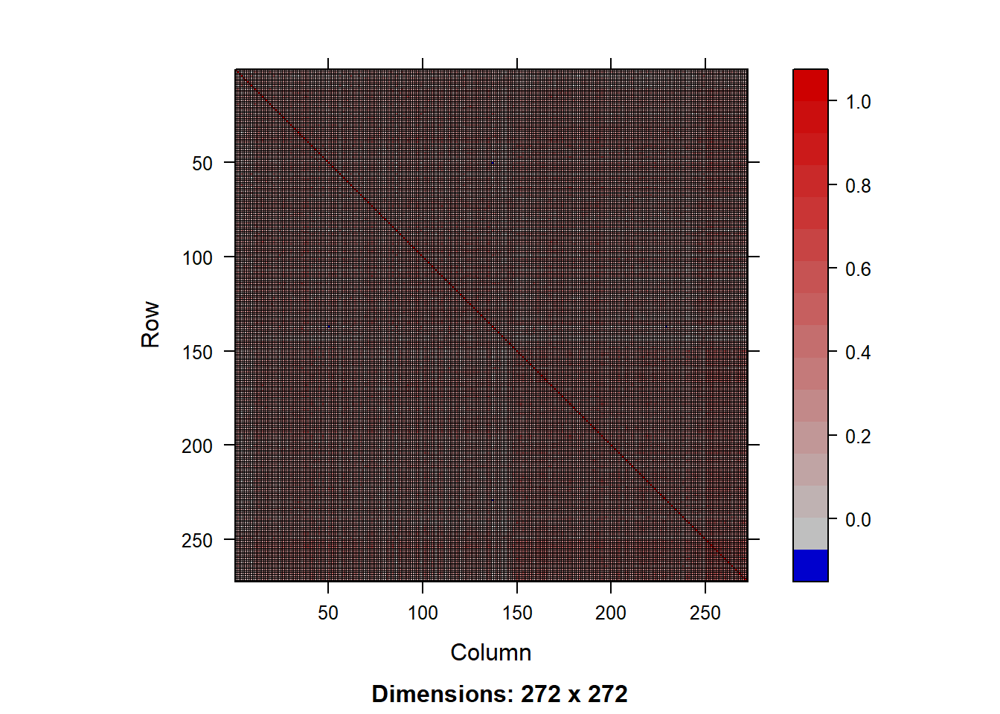
image(Matrix(cov2cor(nonlinear_shrink_est)), title = "非线性收缩估计的相关矩阵")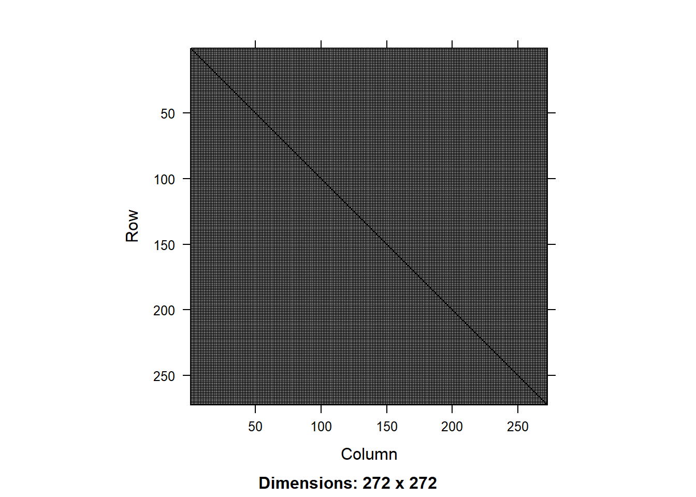